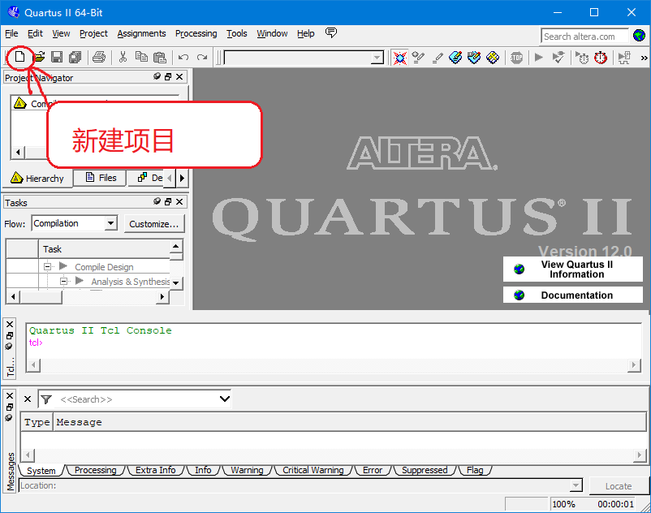
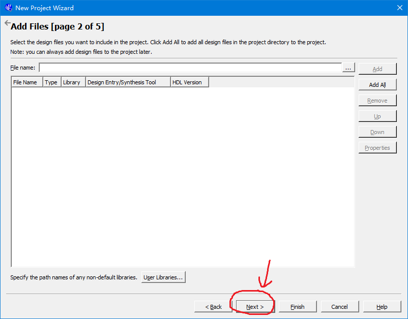
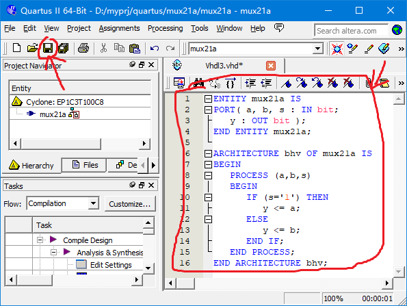

第三章
组合电路的VHDL设计
主要内容
- 多路选择器及其VHDL描述
- 半加器及其VHDL描述
- 四选一多路选择器及其VHDL描述
- 全加器及其VHDL描述
- 乘法器及其VHDL表述
3.1 多路选择器及其VHDL描述
| S | A | B | Y |
| 0 | 0 | 0 | 0 |
| 0 | 0 | 1 | 1 |
| 0 | 1 | 0 | 0 |
| 0 | 1 | 1 | 1 |
| 1 | 0 | 0 | 0 |
| 1 | 0 | 1 | 0 |
| 1 | 1 | 0 | 1 |
| 1 | 1 | 1 | 1 |
由真值表可得： $$ \begin{align*} Y &=\overline{S}\cdot\overline{A}\cdot B+\overline{S}\cdot A \cdot B+S\cdot A \cdot \overline{B} + S\cdot A \cdot B \\ &= \overline{S}\cdot B+S\cdot A \end{align*} $$，或由卡诺图化简可得：$$Y=\overline{S}\cdot B+S\cdot A+A\cdot B$$
| S\AB | 00 | 01 | 11 | 10 |
| 0 | 1 | 1 | ||
| 1 | 1 | 1 |
对于既定的电路功能描述，并没有唯一固定的电路结构，取决于VHDL的综合器基本元件库的来源、优化方向、不同的约束、目标器件等，而在设计中更重要的是关注最终完成的电路的功能和性能（包括系统速度，资源利用率等），而非电路构建的形式。
程序分析：
ENTITY mux21a IS PORT ( A, B, S : IN BIT; Y : OUT BIT ); END ENTITY mux21a; ARCHITECTURE bhv OF mux21a IS BEGIN PROCESS ( A, B, S) BEGIN IF ( S='1') THEN Y <= A; ELSE Y <= B; END IF; END PROCESS; END ARCHITECTURE bhv;
由程序可见，VHDL可以由两部分组成：
- 以关键字
ENTITY为引导，END ENTITY mux21a;为结尾的部分，称为实体，实体名是mux21a，实体描述了电路器件的外部I/O的情况，以及各信号端口的基本性质，如：信号流动的方向、信号的数据类型等 - 以关键字
ARCHITECTURE为引导，END ARCHITECTURE bhv;为结尾的部分，称为结构体，结构体名是bhv，结构体描述了电路器件的内部逻辑功能和电路结构。
数据类型：
VHDL规定，任何一种数据对象（包括常数和变量）都必须严格限定其数据类型，包括：
| 类型名 | 关键字 | 取值范围 | 示例 |
|---|---|---|---|
| 位类型 | BIT |
'0','1' |
A : IN BIT; |
| 位矢量类型 | BIT_VECTOR |
使用TO, DOWNTO指定下标范围 |
A : OUT BIT_VECTOR(0 TO 4); B : IN BIT_VECTOR(7 DOWNTO 0); |
| 布尔类型 | BOOLEAN |
true('1'), false('0'),只占1位 |
A : IN BOOLEAN; |
| 字符类型 | CHARACTER |
0~255 | A : IN CHARACTER; |
| 整数类型 | INTEGER |
根据不同的硬件来决定位数 | A : IN INTEGER; |
| 自然数类型 | NATURAL |
根据不同的硬件来决定位数，>=0 | A : IN NATURAL; |
| 正整数类型 | POSITIVE |
根据不同的硬件来决定位数，>0 | A : IN POSITIVE; |
| 实数类型 | REAL |
和双精度浮点类型一致（8字节） | A : IN REAL; |
数据类型：
VHDL规定，任何一种数据对象（包括常数和变量）都必须严格限定其数据类型，包括：
| 类型名 | 关键字 | 取值范围 | 示例 |
|---|---|---|---|
| 标准逻辑位类型 | STD_LOGIC |
'U'(未初始化的), 'X'(强未知的), 'Z'(高阻态, 比如端口串接1MΩ电阻), 'W'(弱未知的), 'L'(弱逻辑'0'), 'H'(弱逻辑'1'，比如端口串接100kΩ电阻), '-'(忽略), '0', '1'(高电平，强逻辑)，在综合的时候只能用'X', '-', '0', '1', 'Z' |
LIBRARY IEEE; USE IEEE.STD_LOGIC_1164.ALL; ... A : IN STD_LOGIC; |
| 标准逻辑位矢量类型 | STD_LOGIC_VECTOR |
用TO, DOWNTO来确定位数 |
LIBRARY IEEE; USE IEEE.STD_LOGIC_1164.ALL; ... A : IN STD_LOGIC_VECTOR(7 DOWNTO 0); SIGNAL B : STD_LOGIC_VECTOR(1 TO 4); |
数据类型：
VHDL规定，任何一种数据对象（包括常数和变量）都必须严格限定其数据类型，包括：
| 类型名 | 关键字 | 取值范围 | 示例 |
|---|---|---|---|
| 时间类型 | TIME |
时间可以用下面的单位：'fs'(飞秒), $1fs = 1\times 10^{-15}sec$,'ps'(皮秒), $1ps = 1\times 10^{-12}sec$，'ns'(纳秒), $1ns = 1\times 10^{-9}sec$，'us'(微秒), $1us = 1\times 10^{-6}sec$，'ms'(毫秒), $1ms = 1\times 10^{-3}sec$，'sec'(秒), 'min'(分钟), $1min = 60 sec$，'hr'(小时), $1hr = 60 min$ |
constant time1: TIME := 1ps; |
操作符：
高优先级的运算符先算，相同优先级的运算符左到右，可以用小括号来控制运算次序，包括：
| 优先级 | 运算符 | 用途 | 示例 |
|---|---|---|---|
| 1 | ** |
乘方 |
VARIABLE A: INTEGER ; ... A := 2**4; |
| 1 | abs |
求绝对值 |
VARIABLE A: INTEGER ; ... A := abs -1; |
| 1 | not |
取反 |
VARIABLE A: BOOLEAN ; ... A := not (3 < B); |
操作符：
| 优先级 | 运算符 | 用途 | 示例 |
|---|---|---|---|
| 2 | * |
乘 |
VARIABLE A: INTEGER ; ... A := 2*4; |
| 2 | / |
除 |
VARIABLE A: REAL; ... A := 3.0/5; |
| 2 | mod |
取余数 |
VARIABLE A: INTEGER ; ... A := 100 mod 3; |
| 2 | rem |
整除 |
VARIABLE A: INTEGER ; ... A := 100 rem 3; |
操作符：
| 优先级 | 运算符 | 用途 | 示例 |
|---|---|---|---|
| 3 | + |
对于一元运算，表示相同符号；对于二元运算，表示加 |
VARIABLE A: INTEGER ; ... A := +2+4; |
| 3 | - |
对于一元运算，表示相反符号；对于二元运算，表示减 |
VARIABLE A: REAL; ... A := -3.0-5; |
| 3 | & |
并置，构成新的数组或字符串 |
signal Z_BUS:bit_vector(3 downto 0); signal A,B,C,D:bit; signal BYTE:bit_vector(7 downto 0); signal A_BUS:bit_vector(3 downto 0); signal B_BUS:bit_vector(3 downto 0); Z_BUS <= A & B & C & D; BYTE <= A_BUS & B_BUS. |
操作符：
| 优先级 | 运算符 | 用途 | 示例 |
|---|---|---|---|
| 4 | sll(shift left logical) |
逻辑左移，最右以0填充 |
SIGNAL A: STD_LOGIC_VECTOR(7 downto 0); A <= "01100010"; A <= A sll 1; -- A = "11000100", 最右以0填充 |
| 4 | sla(shift left arithmetic) |
算术左移，最右以原最右值填充 |
SIGNAL A: STD_LOGIC_VECTOR(7 downto 0); A <= "01100011"; A <= A sla 1; -- A = "11000111", 最右以1填充 |
| 4 | srl(shift right logical) |
逻辑右移，最左以0填充 |
SIGNAL A: STD_LOGIC_VECTOR(7 downto 0); A <= "10X1Z-00"; A <= A srl 1; -- A = "010X1Z-0", 最左以0填充 |
| 4 | sra(shift right arithmetic) |
算术右移，最左以原最左值填充 |
SIGNAL A: STD_LOGIC_VECTOR(7 downto 0); A <= "10X1Z-00"; A <= A sra 1; -- A = "110X1Z-0", 最左以1填充 |
操作符：
| 优先级 | 运算符 | 用途 | 示例 |
|---|---|---|---|
| 4 | rol(rotate left) |
左回转，右移, 最左以右移出的数填充 |
SIGNAL A: STD_LOGIC_VECTOR(4 downto 0); A <= "10X1Z"; A <= A rol 2; -- A = "1Z10X", 最左以右移的值填充 |
| 4 | ror(rotate right) |
右回转，左移, 最右以左移出的数填充 |
SIGNAL A: STD_LOGIC_VECTOR(4 downto 0); A <= "10X1Z"; A <= A ror 2; -- A = "X1Z10", 最右以左移的值填充 |
操作符：
| 优先级 | 运算符 | 用途 | 示例 |
|---|---|---|---|
| 5 | = |
相等判断，结果是boolean值（true 或 false） |
if a = b then ... |
| 5 | /= |
不相等判断，结果是boolean值（true 或 false） |
if a /= b then ... |
| 5 | < |
小于判断，结果是boolean值（true 或 false） |
if a < b then ... |
| 5 | <= |
小于等于判断，结果是boolean值（true 或 false） |
if a <= b then ... |
| 5 | > |
大于判断，结果是boolean值（true 或 false） |
if a > b then ... |
| 5 | >= |
大于等于判断，结果是boolean值（true 或 false） |
if a >= b then ... |
操作符：
| 优先级 | 运算符 | 用途 | 示例 |
|---|---|---|---|
| 6 | and |
逻辑与判断，结果是boolean值（true 或 false） |
if a and b then ... |
| 6 | or |
逻辑或判断，结果是boolean值（true 或 false） |
if a or b then ... |
| 6 | nand |
逻辑与非判断，结果是boolean值（true 或 false） |
if a nand b then ... |
| 6 | nor |
逻辑或非判断，结果是boolean值（true 或 false） |
if a nor b then ... |
| 6 | xor |
逻辑异或判断，结果是boolean值（true 或 false） |
if a xor b then ... |
| 6 | xnor |
逻辑同或判断，结果是boolean值（true 或 false） |
if a xnor b then ... |
顺序控制语句：
| 控制语句 | 作用 | 示例 |
|---|---|---|
if...then...else...elsif...end if;结构
|
条件分支 |
Signal Code_of_Operation :
Bit_Vector(1 downto 0);
I3: if Code_of_Operation(1) = '1'
then F := Operand_1 + Operand_2;
elsif Code_of_Operation(0) = '1'
then F := Operand_1 - Operand_2;
else F := "00000000";
end if I3;
|
case ... when...end case;结构
|
多条件分支 |
type Some_Characters is
('a','b','c','d','e', 'f');
variable Some_Characters_Variable:
Some_Characters;
begin
C4: case Some_Characters_Variable is
when 'a' => Operation := 0;
when 'b' to 'c' => Operation := 0;
when 'd'| 'e' => Operation := 1;
when others => Operation := 2;
end case C4;
end process;
|
顺序控制语句：
| 控制语句 | 作用 | 示例 |
|---|---|---|
while...loop...end loop;结构
|
当型循环 |
Shift_3: process (Input_X)
variable i : POSITIVE := 1;
begin
L3: while i <= 8 loop
Output_X(i) <= Input_X(i+8) after 5 ns;
i := i + 1;
end loop L3;
end process Shift_3;
|
for...in...loop...end loop;结构
|
范围型循环 |
Shift_4: process (Input_X)
begin
L4: for count_value in 1 to 8 loop
Output_X(count_value) <=
Input_X(count_value + 8) after 5 ns;
end loop L4;
end process Shift_4;
|
程序分析：
ENTITY mux21a IS PORT ( A, B, S : IN BIT; Y : OUT BIT ); END ENTITY mux21a; ARCHITECTURE bhv OF mux21a IS BEGIN PROCESS ( A, B, S) BEGIN IF ( S='1') THEN Y <= A; ELSE Y <= B; END IF; END PROCESS; END ARCHITECTURE bhv;
- VHDL语句类型
- VHDL的语句分为：顺序语句（语句按照顺序逐条执行）和并行语句（语句同时执行）
- 条件语句
- 条件语句是顺序语句，语法：
IF 条件 THEN 语句1; ELSIF 条件2 THEN 语句2; ELSE 语句3； END IF;
其中条件可以是一个boolean值（true或false），也可以是逻辑表达式或条件表达式。
程序分析：
ENTITY mux21a IS PORT ( A, B, S : IN BIT; Y : OUT BIT ); END ENTITY mux21a; ARCHITECTURE bhv OF mux21a IS BEGIN PROCESS ( A, B, S) BEGIN IF ( S='1') THEN Y <= A; ELSE Y <= B; END IF; END PROCESS; END ARCHITECTURE bhv;
- 数据类型
- 在
PORT中，端口信号a,b,s,y的数据类型都是BIT, 还可以是：INTEGER, BOOLEAN, STD_LOGIC等； BIT的取值范围是'0', '1'， 可以参加逻辑运算（and, or, nand, nor, xor, xnor），其结果依然是BIT类型。
程序分析：
ENTITY mux21a IS PORT ( A, B, S : IN BIT; Y : OUT BIT ); END ENTITY mux21a; ARCHITECTURE bhv OF mux21a IS BEGIN PROCESS ( A, B, S) BEGIN IF ( S='1') THEN Y <= A; ELSE Y <= B; END IF; END PROCESS; END ARCHITECTURE bhv;
- 进程语句和顺序语句
- 在本例中，顺序语句
if是放在process语句块中，这称为进程语句，所有顺序语句都要放在进程语句块中； PROCESS(a,b,s)中的a,b,s称为进程的敏感信号表，通常要求将进程中的所有输入信号都放在敏感信号表中，VHDL的进程运行会监控敏感信号是否发生变化（从0变为1，或1变为0），就会激发进程的运行，这称为事件。- 在一个结构体
ARCHITECTURE中，可以包含任意个进程process，每一个进程都是并行运行。
程序分析：
ENTITY mux21a IS PORT ( A, B, S : IN BIT; Y : OUT BIT ); END ENTITY mux21a; ARCHITECTURE bhv OF mux21a IS BEGIN PROCESS ( A, B, S) BEGIN IF ( S='1') THEN Y <= A; ELSE Y <= B; END IF; END PROCESS; END ARCHITECTURE bhv;
- 端口语句和端口信号名
- 端口语句
PORT()，端口可以对信号名和端口数据类型等的定义。 - 端口模式
- 可综合的端口模式包括：
IN:输入端口，定义的通道为单向只读模式OUT:输出端口，定义的通道为单向输出模式INOUT:双向端口，定义的通道为双向模式，即从端口的内部看，可以对端口赋值，或从此端口读入外部的值；从端口的外部看，信号可以从此端口流出，也可以向端口输入信号，如RAM的数据口，单片机的I/O口;BUFFER:缓冲端口，和INOUT类似，但是当内部读入数据时，不能是外部传递的数据，而只能是内部输出反馈的数据。
程序分析：
ENTITY mux21a IS PORT ( A, B, S : IN BIT; Y : OUT BIT ); END ENTITY mux21a; ARCHITECTURE bhv OF mux21a IS BEGIN PROCESS ( A, B, S) BEGIN IF ( S='1') THEN Y <= A; ELSE Y <= B; END IF; END PROCESS; --结束进程 END ARCHITECTURE bhv;
- 关键字
- key word，关键字，是VHDL中保留作为自己的特殊用途的词汇，编程者不能使用这些词汇来命名自己的变量等标识符。左边蓝色的都是关键字。VHDL中关键字不分大小写。
- 标识符
- 用户自定义的实体（
entity）名、结构体（ARCHITECTURE）名、端口（port）名、信号（signal）名等，标识符只能用字母(a-z)、数值(0-9)、下划线(_)来组成，第一个字符不能是数值，大小写不区分 - 注释
--开始的地方为注释，从此开始到行末都是注释。
实际编程及仿真：Quartus II + ModelSim
创建新项目

是否添加已经存在的文件
选择fpga的型号

设置综合器、仿真器

总结

创建vhdl文件：File --> new --> vhdl

编写VHDL程序，并保存
编译
查看RTL（寄存器传输级）结果
查看逻辑门结果
进行仿真：ModelSim
创建项目
项目目录可以和Quartus的项目目录放在一起。
将前面创建的vhdl文件添加进入仿真项目
编译并进行仿真
进入信号选择界面
如下图，在object窗口选择需要的信号，右键单击，并选择加入波形显示。
进入波形界面
设置输入信号，并开始仿真，查看波形
3.2 半加器及其VHDL描述
| A | B | SO | CO |
|---|---|---|---|
| 0 | 0 | 0 | 0 |
| 0 | 1 | 1 | 0 |
| 1 | 0 | 1 | 0 |
| 1 | 1 | 0 | 1 |
| $SO=\overline{A}\cdot B+ A\cdot\overline{B}=A\bigoplus B$, $CO=A\cdot B$ | |||
LIBRARY IEEE; USE IEEE.STD_LOGIC_1164.ALL; ENTITY half_adder IS PORT (A: IN STD_LOGIC; B: IN STD_LOGIC; SO: OUT STD_LOGIC; CO: OUT STD_LOGIC ); END ENTITY half_adder; ARCHITECTURE fh1 of half_adder IS BEGIN SO <= A xor B; CO <= A AND B; END ARCHITECTURE fh1;
- 整个程序是VHDL完整电路模块的程序代码；
- 第1、2行是设计库和程序包的调用；
- 第3~8行是VHDL的实体(ENTITY)描述部分；
- 第4~7行是端口说明和定义；
- 第9~13行是VHDL的结构体（ARCHITECTURE）描述部分；
- 第11，12行是电路模块的功能描述。并行。
实体表达和实体名
LIBRARY IEEE; USE IEEE.STD_LOGIC_1164.ALL; ENTITY half_adder IS PORT (A: IN STD_LOGIC; B: IN STD_LOGIC; SO: OUT STD_LOGIC; CO: OUT STD_LOGIC ); END ENTITY half_adder; ARCHITECTURE fh1 of half_adder IS BEGIN SO <= A xor B; CO <= A AND B; END ARCHITECTURE fh1;
- 实体描述的是端口的构成，包括端口数量，种类（信号的流动方向和方式），端口上流动信号的属性等；
- 实体名称属于标识符，建议以器件名来命名，比如4位二进制计数器：counter4b, 8位二进制加法器：adder8b等，但是不能和VHDL工具库已定义的元件名重名，也不能用数字开头的实体名，如：74LS138等；
结构体表述
LIBRARY IEEE; USE IEEE.STD_LOGIC_1164.ALL; ENTITY half_adder IS PORT (A: IN STD_LOGIC; B: IN STD_LOGIC; SO: OUT STD_LOGIC; CO: OUT STD_LOGIC ); END ENTITY half_adder; ARCHITECTURE fh1 of half_adder IS BEGIN SO <= A xor B; CO <= A AND B; END ARCHITECTURE fh1;
- 在
ARCHITECTURE和BEGIN之间可以加入说明语句，里面包括：定义类型、常量、变量、元件声明等，这个不是必须的，本例就没有； - 在
BEGIN和END ARCHITECTURE之间是功能描述语句，这是必须的。里面包括：并行语句，顺序语句，以及混合。
标准逻辑位类型：STD_LOGIC
LIBRARY IEEE; USE IEEE.STD_LOGIC_1164.ALL; ENTITY half_adder IS PORT (A: IN STD_LOGIC; B: IN STD_LOGIC; SO: OUT STD_LOGIC; CO: OUT STD_LOGIC ); END ENTITY half_adder; ARCHITECTURE fh1 of half_adder IS BEGIN SO <= A xor B; CO <= A AND B; END ARCHITECTURE fh1;
- 常规的
BIT类型只有两种取值：'0', '1'，对于实际电路未免有点不足； - VHDL引入一种标准的
STD_LOGIC类型，其取值包括：'U'(未初始化的), 'X'(强未知的，即可取'0'或'1'), 'Z'(高阻态, 比如端口串接1MΩ电阻), 'W'(弱未知的), 'L'(弱逻辑'0'), 'H'(弱逻辑'1'，比如端口串接100kΩ电阻), '-'(忽略), '0', '1'(高电平，强逻辑)，在综合的时候只能用'X', '-', '0', '1', 'Z'，'X','-'可以和卡诺图化简里的相对应。
赋值和逻辑操作：
LIBRARY IEEE; USE IEEE.STD_LOGIC_1164.ALL; ENTITY half_adder IS PORT (A: IN STD_LOGIC; B: IN STD_LOGIC; SO: OUT STD_LOGIC; CO: OUT STD_LOGIC ); END ENTITY half_adder; ARCHITECTURE fh1 of half_adder IS BEGIN SO <= A xor B; CO <= A and B; END ARCHITECTURE fh1;
- 对于信号(signal)类型的变量（包括端口），要对其赋值，必须用
<=运算符，并且要求赋值号两边的类型必须一致； - 基本语法：
目标变量<=驱动表达式;这表示当驱动表达式任一组成信号发生变化，此表达式就会重新被计算一遍，并把结果赋给目标变量。 - VHDL中支持7种类型的逻辑运算，包括：
and,or,nand,nor,xor,xnor,not，注意只有BIT, BOOLEAN, STD_LOGIC三种类型的量支持逻辑运算。
设计库和标准程序包：
LIBRARY IEEE; USE IEEE.STD_LOGIC_1164.ALL; ENTITY half_adder IS PORT (A: IN STD_LOGIC; B: IN STD_LOGIC; SO: OUT STD_LOGIC; CO: OUT STD_LOGIC ); END ENTITY half_adder; ARCHITECTURE fh1 of half_adder IS BEGIN SO <= A xor B; CO <= A and B; END ARCHITECTURE fh1;
- 有许多的类型说明，函数是预先放在VHDL综合器（或仿真器）附带的设计库和程序包中，比如
BIT类型是在标准库STD里面的STANDARD程序包中，为了使用它，可以如下：LIBRARY WORK; --打开工作库 LIBRARY STD; --打开标准库 --使用里面定义的所有元素 USE STD.STANDARD.ALL;
work工作库，指的是当前项目的保存的目录，这样可以继续打开保存在这个目录下的其他的库和程序包。- 但是
work、std库都是缺省打开的，可以不用写；STD_LOGIC所在的IEEE库STD_LOGIC_1164程序包，这个使用就必须声明。
3.3 四选一多路选择器及其VHDL描述
LIBRARY IEEE; USE IEEE.STD_LOGIC_1164.ALL; ENTITY mux41a IS PORT( a, b, c, d, s0, s1: IN STD_LOGIC; y: OUT STD_LOGIC); END ENTITY mux41a; ARCHITECTURE bhv of mux41a IS SIGNAL s : STD_LOGIC_VECTOR( 1 DOWNTO 0); BEGIN s <= s1 & s0; PROCESS (s1, s0) BEGIN CASE (s) IS WHEN "00" => y <= a; WHEN "01" => y <= b; WHEN "10" => y <= c; WHEN "11" => y <= d; WHEN OTHERS => NULL; END CASE; END PROCESS; END ARCHITECTURE bhv;
CASE语句
LIBRARY IEEE; USE IEEE.STD_LOGIC_1164.ALL; ENTITY mux41a IS PORT( a, b, c, d, s0, s1: IN STD_LOGIC; y: OUT STD_LOGIC); END ENTITY mux41a; ARCHITECTURE bhv of mux41a IS SIGNAL s : STD_LOGIC_VECTOR( 1 DOWNTO 0); BEGIN s <= s1 & s0; PROCESS (s1, s0) BEGIN CASE (s) IS WHEN "00" => y <= a; WHEN "01" => y <= b; WHEN "10" => y <= c; WHEN "11" => y <= d; WHEN OTHERS => NULL; END CASE; END PROCESS; END ARCHITECTURE bhv;
CASE也是顺序结构，因此也应该放在PROCESS进程块中，其中=>不是操作符，相当于THEN；
WHEN中的选择值必须在CASE语句中表达式的取值范围内，数据类型也需要匹配；
最后的WHEN OTHERS表示其他可能的取值，OTHERS只能出现一次，而且必须作为最后一个条件。NULL表示不做任何操作，注意如果前面的条件不全，必须要加OTHERS；
CASE语句
sel:IN INTEGER RANGE 0 to 15; ... case sel IS -- 当sel=0时选中 WHEN 0 => z1 <= "010"; -- 当sel=1或3时选中 WHEN 1|3 => z1 <= "110"; -- 当sel=2、4、5、6、7时选中 WHEN 4 to 7|2 => z1 <= "011"; -- 当sel=8~15时选中 WHEN OTHERS => z1 <= "111"; end case;
CASE多条件选择值的组合可以如下：；
- 单个普通值；
- 选址选择范围，比如：
2 to 4，表示取值：2,3,4;
3 downto 0，表示取值：3,2,1,0 - 并列数值，比如：
3 | 5，表示取值：3或者5 - 以上几种的混合；
CASE语句常见容易出错的地方
signal value: integer range 0 to 15; signal out1 : std_logic; ... case value IS -- value 为2~15的值未包括进去， -- 在综合的时候会报错， -- 除非加入 when others 语句 when 0 => out1 <= '1' when 1 => out1 <= '0' end case; ... case value is -- 选择值 5~10 有重叠 when 0 to 10 => out1 <= '1' when 5 to 15 => out1 <= '0' end case;
- 对于没有覆盖全部选择值的情况，如果没有
when others，综合器通常会判错； - 如上例加上
WHEN OTHERS => NULL;，综合器会在输出口加上时序模块（锁存器），这应该避免，可以加上其他的顺序赋值语句，比如WHEN OTHERS => y <= 'Z';；这样才能得到不含时序电路的纯组合逻辑电路； CASE只能实现逻辑或，无法实现逻辑与，在需要与逻辑操作的情况下，应该使用IF
IEEE库预定义标准逻辑位矢量：STD_LOGIC_VECTOR
LIBRARY IEEE;
USE IEEE.STD_LOGIC_1164.ALL;
...
B : OUT STD_LOGIC_VECTOR( 7 DOWNTO 0);
SIGNAL A : STD_LOGIC_VECTOR( 1 DOWNTO 4);
...
B <= "01100010";
B (4 downto 1) <= "1101";
B (7 downto 4) <= A; --B的高4位由A赋值
B <= "1101" & "0010";
STD_LOGIC_VECTOR被定义为一维位数组，每一个元素都是STD_LOGIC，通常用STD_LOGIC_VECTOR来表示多通道端口、多通道节点，或者总线；
在使用STD_LOGIC_VECTOR时，必须注明其数组宽度，即位宽，注意定义的时候，左边为高位，右边为低位;
第4行定义了矢量数组B，其元素从左到右分别为B(7),B(6),...,B(0)
第5行定义了矢量数组A，其元素从左到右分别为A(1),A(2),A(3),A(4)
第10行使用了并置操作符&，将信号或者数组合并起来组成新的数组矢量，例如"VH"&"DL" --> "VHDL"
其他预定义标准数据类型
LIBRARY IEEE; USE IEEE.STD_LOGIC_ARITH.ALL; ... VARIABLE v1 : unsigned (0 to 10); SIGNAL v3 : signed (9 downto 0);
如果导入Synopsys公司在IEEE库加入的STD_LOGIC_ARITH程序包，则可以使用额外的unsigned, signed, small_int等类型；
unsigned类型表示无符号整数（以二进制位矢量的形式），实际使用的时候，除了如第4行一样定义变量外，还可以用unsigned'("1000")（即十进制的8）这样来定义无符号常数，注意左边为高位，右边为低位；
signed类型表示有符号整数（以二进制位矢量的形式），实际使用的时候，除了如第5行一样定义变量外，还可以用signed'("0101)（即十进制的+5），signed'("1011)（即十进制的-5，注意这是采用补码，转换时去除最高位(011)，转换为反码(100)，再+1(101)，即可得到实际的整数(十进制5)，再加上符号）这样来定义有符号常数，注意左边为高位，右边为低位，最左边为符号位，1为负数；
unsigned和signed类型本质上是STD_LOGIC类型的数组；
信号定义和数据对象
LIBRARY IEEE; USE IEEE.STD_LOGIC_1164.ALL; ENTITY mux41a IS PORT( a, b, c, d, s0, s1: IN STD_LOGIC; y: OUT STD_LOGIC); END ENTITY mux41a; ARCHITECTURE bhv of mux41a IS SIGNAL s : STD_LOGIC_VECTOR( 1 DOWNTO 0); BEGIN s <= s1 & s0; PROCESS (s1, s0) BEGIN CASE (s) IS WHEN "00" => y <= a; WHEN "01" => y <= b; WHEN "10" => y <= c; WHEN "11" => y <= d; WHEN OTHERS => NULL; END CASE; END PROCESS; END ARCHITECTURE bhv;
第11行将器件内部通讯的对象s定义为信号signal，信号属于数据对象（Data Objects），信号的赋值用<=，信号可以如同一根导线一样在结构体中传递信息，但其类型只能是BIT, STD_LOGIC及其衍生类型，比如矢量等；
其他的数据对象（Data Objects）包括：变量VARIABLE、常量CONSTANT
其他的四选一多路选择器的描述方式
LIBRARY IEEE; USE IEEE.STD_LOGIC_1164.ALL; ENTITY mux41a IS PORT( a, b, c, d, s0, s1: IN STD_LOGIC; y: OUT STD_LOGIC); END ENTITY mux41a; ARCHITECTURE bhv of mux41a IS SIGNAL s : STD_LOGIC_VECTOR( 1 DOWNTO 0); BEGIN s <= s1 & s0; PROCESS (s1, s0) BEGIN CASE (s) IS WHEN "00" => y <= a; WHEN "01" => y <= b; WHEN "10" => y <= c; WHEN "11" => y <= d; WHEN OTHERS => NULL; END CASE; END PROCESS; END ARCHITECTURE bhv;
-- 采用if结构 PROCESS (s1, s0) BEGIN IF (s="00") THEN y <= a; ELSIF (s="01") THEN y <= b; ELSIF (s="10") THEN y <= c; ELSE y <= d; END IF; END PROCESS;
-- 采用并行:
-- WHEN...ELSE 条件信号赋值语句
y <=a WHEN s="00" ELSE
b WHEN s="01" ELSE
c WHEN s="10" ELSE
d ;
-- 采用并行：选择信号赋值 WITH s SELECT --敏感信号s y <=a WHEN "00", b WHEN "01", c WHEN "10", d WHEN "11"; -- 如果有没有覆盖的条件，需要加： -- unaffected WHEN OTHERS;
3.4 全加器及其VHDL描述
| ain | bin | cin | cout | sum |
|---|---|---|---|---|
| 0 | 0 | 0 | 0 | 0 |
| 0 | 0 | 1 | 0 | 1 |
| 0 | 1 | 0 | 0 | 1 |
| 0 | 1 | 1 | 1 | 0 |
| 1 | 0 | 0 | 0 | 1 |
| 1 | 0 | 1 | 1 | 0 |
| 1 | 1 | 0 | 1 | 0 |
| 1 | 1 | 1 | 1 | 1 |
在这个例子中，我们学习引入元器件模型，实现所谓例化（Component Instantiation），并了解由顶向下的设计方法；
本例子中，全加器里由两个半加器和一个或逻辑门组成，这两个元件由单独.vhd文件组成。
下面的程序文件最好都放在同一项目目录下。
--full_adder.vhd LIBRARY IEEE; USE IEEE.STD_LOGIC_1164.ALL; ENTITY full_adder IS PORT( ain, bin, cin : IN STD_LOGIC; cout, sum: OUT STD_LOGIC ); END ENTITY full_adder; ARCHITECTURE fd1 OF full_adder IS COMPONENT half_adder PORT (A, B : IN STD_LOGIC; CO,SO: OUT STD_LOGIC ); END COMPONENT; COMPONENT or2a PORT (a, b: IN STD_LOGIC; c : OUT STD_LOGIC ); END COMPONENT; SIGNAL net1, net2, net3 : STD_LOGIC; BEGIN u1 : half_adder PORT MAP (A=>ain, B=>bin, CO=>net2, SO=>net1); u2 : half_adder PORT MAP (net1, cin, net3, sum); u3 : or2a PORT MAP (a=>net2, b=>net3, c=>cout); END ARCHITECTURE fd1;
LIBRARY IEEE;--half_adder.vhd USE IEEE.STD_LOGIC_1164.ALL; ENTITY half_adder IS PORT(A: IN STD_LOGIC; B: IN STD_LOGIC; SO: OUT STD_LOGIC; CO: OUT STD_LOGIC); END ENTITY half_adder; ARCHITECTURE fh1 of half_adder IS BEGIN SO <= A xor B; CO <= A AND B; END ARCHITECTURE fh1;
LIBRARY IEEE;--or2a.vhd USE IEEE.STD_LOGIC_1164.ALL; ENTITY or2a IS PORT( a, b : IN STD_LOGIC; c : OUT STD_LOGIC); END ENTITY or2a; ARCHITECTURE one OF or2a IS BEGIN c <= a or b; END ARCHITECTURE one;
VHDL例化语句
--full_adder.vhd LIBRARY IEEE; USE IEEE.STD_LOGIC_1164.ALL; ENTITY full_adder IS PORT( ain, bin, cin : IN STD_LOGIC; cout, sum: OUT STD_LOGIC ); END ENTITY full_adder; ARCHITECTURE fd1 OF full_adder IS COMPONENT half_adder PORT (A, B : IN STD_LOGIC; CO,SO: OUT STD_LOGIC ); END COMPONENT; COMPONENT or2a PORT (a, b: IN STD_LOGIC; c : OUT STD_LOGIC ); END COMPONENT; SIGNAL net1, net2, net3 : STD_LOGIC; BEGIN u1 : half_adder PORT MAP (A=>ain, B=>bin, CO=>net2, SO=>net1); u2 : half_adder PORT MAP (net1, cin, net3, sum); u3 : or2a PORT MAP (a=>net2, b=>net3, c=>cout); END ARCHITECTURE fd1;
VHDL的例化语句由两部分组成
- 第一部分是元件（component）的声明，如第9-12行，以及第13-16行，这里必须描述端口的引脚类型和数目、名字；
- 第二部分是元件的例化和端口映射说明，如第19-24行，这里要求几点：首先，端口映射有两种，一种是按名称映射，比如第20行，第24行，另一种是按照顺序映射，比如第22行；
- 其次，在映射格式：
元件端口名=>电路中实际的信号名，这里，右边的信号名可以是端口输入输出信号，也可以是电路中的内部信号；
3.4.3 -- 8位加法器设计及算术运算符的重载
LIBRARY IEEE;
USE IEEE.STD_LOGIC_UNSIGNED.ALL;
USE IEEE.STD_LOGIC_1164.ALL;
ENTITY adder8b IS
PORT( a, b : IN STD_LOGIC_VECTOR(7 downto 0);
cin: IN STD_LOGIC;
cout: OUT STD_LOGIC;
dout: OUT STD_LOGIC_VECTOR(7 downto 0));
END ENTITY adder8b;
ARCHITECTURE bhv OF adder8b IS
SIGNAL data : STD_LOGIC_VECTOR(8 downto 0);
BEGIN
data<=('0'&a)+('0'&b)+("00000000"&cin);
cout<=data(8);
dout<=data(7 downto 0);
END ARCHITECTURE bhv;
8位的加法器可以用8个1位二进制全加器来组合，也可以利用一些技巧，本质上，STD_LOGIC_VECTOR只是矢量一维位数组，不能直接运算，但是IEEE.STD_LOGIC_UNSIGNED程序包对矢量数组提供了+的支持。
除了+，IEEE.STD_LOGIC_UNSIGNED程序包对矢量数组还提供了-, *, /, =, >=, >, <=, <, /=等操作符的支持。
如何在model sim 仿真时输入数值
在上面的8位全加器中，为了验证相加是否正确，在modelsim仿真波形窗口中，如图将a,b,dout的输出格式都设置为unsigned，并如图设置信号a的值为"01001101", 信号b的值为"00100010", 信号cin为时钟period=100,first edge=falling。
如何在model sim 仿真时输入数值
参考上面的输入，多次修改a，b信号的值，并输出波形。